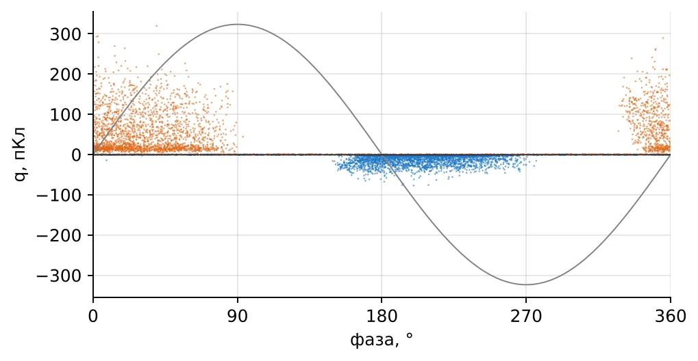
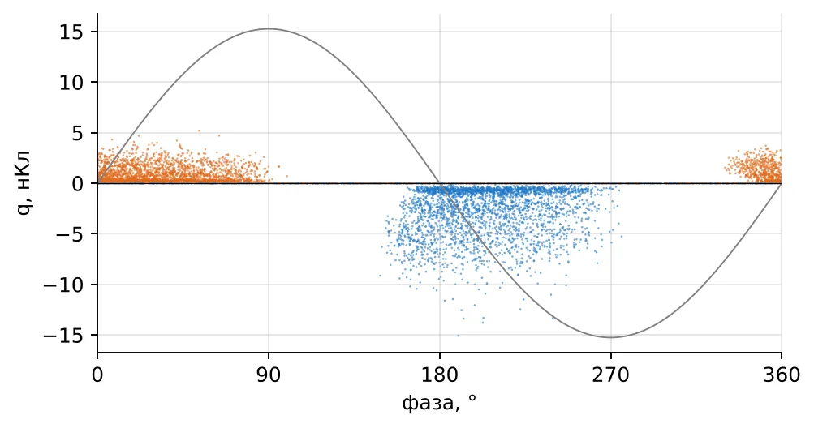
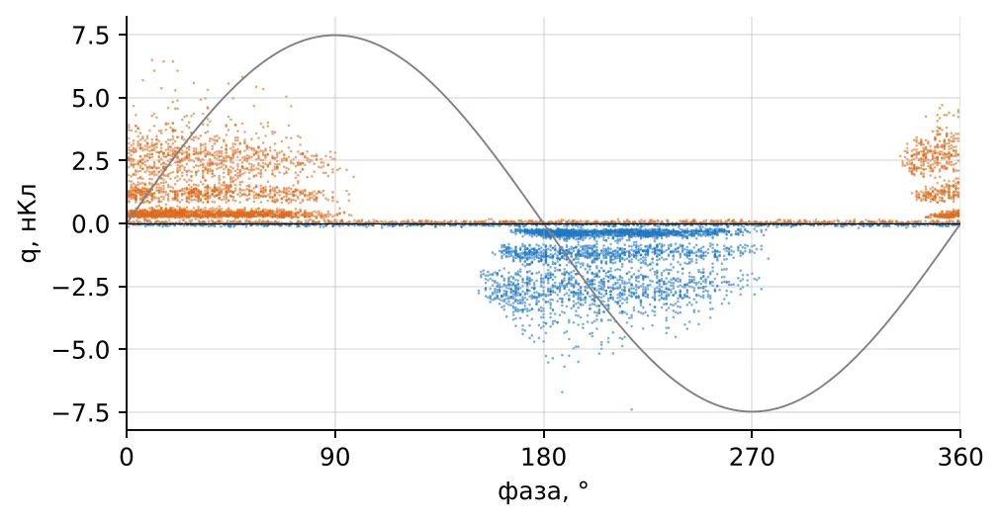
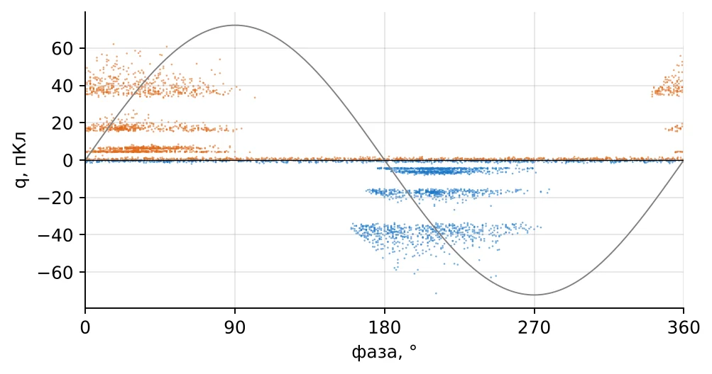
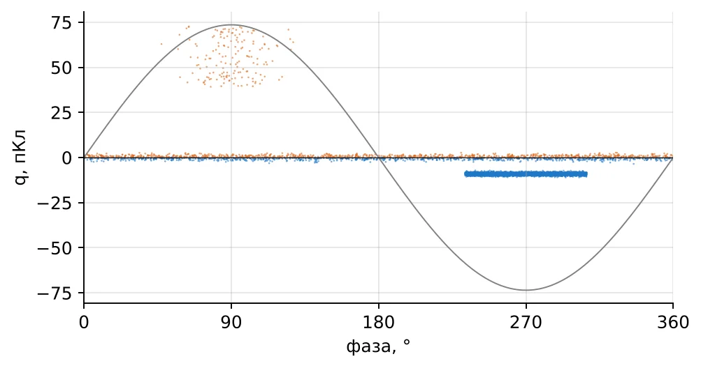
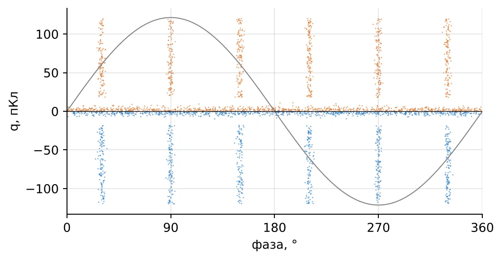
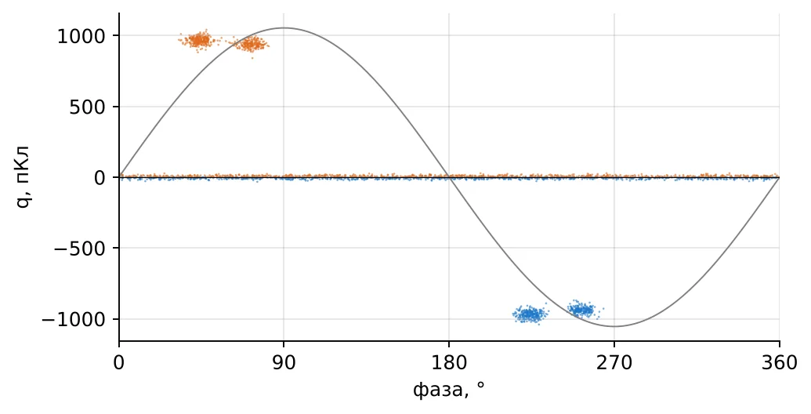
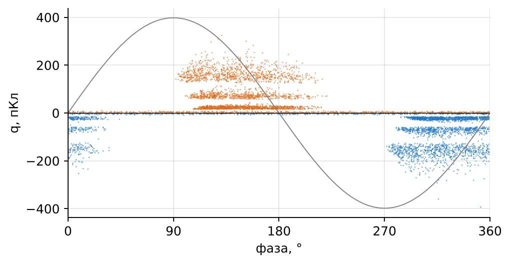

Техника высоких напряжений
Практическое занятие
Частичные разряды и PRPD-диаграммы
Расчёты, чтение диаграмм и измерение на интерактивной модели «ЧР и PRPD»
Цель занятия. Закрепить физику ЧР и методику измерения: рассчитать напряжение возникновения, заряд, энергию и место дефекта; научиться по PRPD-диаграмме узнавать источник ЧР и выбирать действие; выполнить измерение с калибровкой на модели схемы по ГОСТ Р 55191. Продолжительность: 2 академических часа (90 мин). Нужно: конспекты лекций 10 и 11, калькулятор (корни, логарифмы), интерактив «ЧР и PRPD» на компьютере или телефоне. Правила. Ответы округляйте до трёх значащих цифр; принимается отклонение до 3 %. Подсказки «?» в интерактиве бесплатны, но решение там открывается только после двух попыток — сначала думайте сами. |
| Время | Часть | Где |
|---|---|---|
| 0–30 мин | А. Расчётные задачи с объекта (8 задач) | Этот лист + вкладка «Задачи» |
| 30–55 мин | Б. Чтение PRPD: 8 случаев | Этот лист + вкладка «Диагност» |
| 55–80 мин | В. Измерение с калибровкой и локализация в кабеле | Вкладка «Измерение» |
| 80–90 мин | Г. Опыты на модели поры, итоги | Вкладка «Пора в изоляции» |
Часть А. Расчётные задачи
Задачи взяты из ситуаций, с которыми сталкиваются инженеры служб диагностики и испытательных лабораторий. Решите на листе, затем введите ответ во вкладке «Задачи» интерактива.
Задача А1. Калибровка прибора
Перед испытанием ввода калибратор ввёл заряд 100 пКл — на экране импульс 40 мВ. При испытательном напряжении наибольшие импульсы ЧР — 180 мВ. Каков их кажущийся заряд, пКл?
Подсказка. Калибровка даёт масштаб: сколько пКл приходится на 1 мВ. Шкала прибора линейна.
Решение и ответ: ____________________________________________ пКл
Задача А2. Напряжение возникновения ЧР в поре кабеля
Кабель 6/10 кВ: толщина изоляции из сшитого полиэтилена D = 5,5 мм, εr = 2,3. В изоляции плоская воздушная пора d = 0,2 мм поперёк поля. Пробивное напряжение поры по Пашену — 1,42 кВ. При каком действующем напряжении на изоляции в поре начнутся ЧР, кВ?
Подсказка. Пора и остальная изоляция — последовательные конденсаторы. Какая доля напряжения ложится на пору? Пробивное напряжение рассчитано по закону Пашена (учебник, формула 1.25) для воздуха при атмосферном давлении.
Решение и ответ: ____________________________________________ кВ
Задача А3. Энергия одного разряда
В обмотке двигателя 6 кВ импульсы ЧР 500 пКл появляются при напряжении возникновения 6 кВ (действующее). Оцените энергию одного разряда, мкДж.
Подсказка. Энергия разряда — заряд, умноженный на напряжение, при котором он происходит. Для синусоиды берут амплитуду напряжения возникновения и множитель 1/2 (оценка по Крюгеру).
Решение и ответ: ____________________________________________ мкДж
Задача А4. Средний ток ЧР
Онлайн-система на генераторе 50 Гц регистрирует в среднем 200 импульсов за период со средним кажущимся зарядом 300 пКл. Каков средний ток ЧР, мкА?
Подсказка. Средний ток — суммарный заряд, проходящий за секунду. Сколько периодов в секунде?
Решение и ответ: ____________________________________________ мкА
Задача А5. Где дефект в кабеле
Кабель длиной 800 м, дальний конец разомкнут. Прибор в начале кабеля видит импульс ЧР и через 3,2 мкс — его отражение от дальнего конца. Скорость импульса в кабеле 170 м/мкс. На каком расстоянии от прибора дефект, м?
Подсказка. Одна волна идёт от дефекта прямо к прибору, другая — сначала к дальнему концу и обратно. Какой лишний путь проходит вторая? Скорость берут по паспорту кабеля или измеряют рефлектометром: в реальном кабеле она ниже c/√εr из-за полупроводящих экранов.
Решение и ответ: ____________________________________________ м
Задача А6. Акустическая локация в трансформаторе
На баке масляного трансформатора стоит акустический датчик. Электрический импульс ЧР зарегистрирован, а звуковой сигнал от того же разряда пришёл через 210 мкс. Скорость звука в масле 1400 м/с. Как далеко от датчика источник, см?
Подсказка. Электрический сигнал приходит практически мгновенно и служит отметкой начала. Задержка звука — время его пути от разряда до датчика.
Решение и ответ: ____________________________________________ см
Задача А7. Чувствительность схемы измерения
Объект Ca = 10 нФ (обмотка). Сначала стоял конденсатор связи Ck = 1 нФ, затем его заменили на 100 пФ. Во сколько раз уменьшился отсчёт прибора для того же разряда?
Подсказка. Импульс ЧР распределяется между ёмкостью объекта и ветвью конденсатора связи. Какая доля заряда проходит через измерительное устройство?
Решение и ответ: ____________________________________________ раз
Задача А8. Приёмка кабеля
Кабель 6/10 кВ (U0 = 6 кВ) испытывают на ЧР при 1,73U0. Каким должно быть испытательное напряжение, кВ?
Подсказка. U0 — номинальное напряжение между жилой и экраном. Множитель 1,73 задан стандартом на кабели с пластмассовой изоляцией.
Решение и ответ: ____________________________________________ кВ
Часть Б. Чтение PRPD-диаграмм
Для каждого случая по картине и обстоятельствам определите источник ЧР и выберите действие. Помните алгоритм лекции 11: синхронизация → фон → шум → положение облаков → симметрия → разброс величины → зависимость от напряжения → тренд. Ответы проверьте во вкладке «Диагност».
Случай Б1. Кабель 10 кВ с изоляцией из сшитого полиэтилена, 1,2 км
После монтажа новой соединительной муфты кабель испытывают напряжением 50 Гц от резонансной установки. При 1,7U0 = 10,2 кВ прибор показывает импульсы до 300 пКл.

Рис. 1. PRPD, случай Б1
1. Что за источник ЧР?
А) Внутренние поры в изоляции кабеля по всей длине
Б) Плавающий потенциал в концевой муфте
В) Корона на высоковольтном выводе установки
Г) Поверхностный разряд в муфте по границе раздела
Д) Помеха от преобразователя
2. Что делать?
А) Заменить весь кабель
Б) Только повторить измерение через год
В) Повысить напряжение до пробоя, чтобы «выжечь» дефект
Г) Локализовать источник по отражению импульса и перемонтировать муфту
Д) Ввести кабель в работу: 300 пКл для кабеля допустимо
Ответ: 1 — ____ 2 — ____ По каким признакам: ______________________________________
Случай Б2. Асинхронный двигатель 6 кВ насоса главного водоотлива
Капитальный ремонт, испытание обмотки статора напряжением 50 Гц от установки, 1,0Uном/√3. Двигатель 25 лет в работе, жалобы на вибрацию.

Рис. 2. PRPD, случай Б2
1. Что за источник ЧР?
А) Плавающий потенциал
Б) Корона на выводах
В) Поры внутри слюдяной изоляции, обычное старение
Г) Пазовые разряды: износ полупроводящего покрытия и ослабление клиньев
Д) Помеха от сварки в цехе
2. Что делать?
А) Ничего: для слюдяной изоляции ЧР допустимы
Б) Пропитать обмотку лаком снаружи
В) Заменить подшипники
Г) Проверить заклиновку и покрытие в пазах, переклинить и восстановить покрытие
Д) Снизить напряжение питания двигателя
Ответ: 1 — ____ 2 — ____ По каким признакам: ______________________________________
Случай Б3. Гидрогенератор 10,5 кВ, онлайн-мониторинг
Датчики — конденсаторы 80 пФ на выводах. Qm за 4 года держится на уровне 4–5 нКл без роста. Изоляция — слюдяная термореактивная.

Рис. 3. PRPD, случай Б3
1. Что за источник ЧР?
А) Корона на заземлённых частях
Б) Пазовые разряды
В) Плавающий потенциал
Г) Помеха от возбудителя
Д) Внутренние разряды в слюдяной изоляции
2. Что делать?
А) Продолжать наблюдение за трендом, сравнивать с машинами того же типа
Б) Сменить датчики на более чувствительные
В) Поднять напряжение на 10 %
Г) Отключить систему мониторинга как бесполезную
Д) Срочно вывести генератор в ремонт
Ответ: 1 — ____ 2 — ____ По каким признакам: ______________________________________
Случай Б4. Сухой трансформатор 6/0,4 кВ с литой изоляцией, 1000 кВ·А
Приёмочные испытания на заводе. По стандарту на сухие трансформаторы допустимый уровень — порядка 10 пКл при 1,3Uном. Прибор показывает 60 пКл, картина устойчивая.

Рис. 4. PRPD, случай Б4
1. Что за источник ЧР?
А) Помеха от испытательного трансформатора
Б) Поры (непропитка) в литой эпоксидной изоляции обмотки
В) Корона на вводах
Г) Плавающий потенциал
Д) Поверхностный разряд по загрязнённой поверхности
2. Что делать?
А) Принять с понижением мощности
Б) Повторить испытание при 1,0Uном и принять
В) Забраковать обмотку: литая изоляция с порами быстро разрушается
Г) Покрасить обмотку снаружи
Д) Принять: 60 пКл для трансформатора мало
Ответ: 1 — ____ 2 — ____ По каким признакам: ______________________________________
Случай Б5. Ячейка КРУ 6 кВ, испытание шин
При испытании напряжением 50 Гц слышен треск, прибор показывает множество мелких импульсов одинаковой величины. При дальнейшем подъёме напряжения появились редкие крупные импульсы.

Рис. 5. PRPD, случай Б5
1. Что за источник ЧР?
А) Корона на острие заземлённой части
Б) Пазовые разряды
В) Плавающий потенциал
Г) Внутренние поры в опорных изоляторах
Д) Корона на острой кромке под высоким напряжением
2. Что делать?
А) Заменить измерительный прибор
Б) Залить ячейку компаундом
В) Снизить напряжение испытания
Г) Забраковать изоляторы
Д) Найти и скруглить острую кромку или неубранный провод на шине
Ответ: 1 — ____ 2 — ____ По каким признакам: ______________________________________
Случай Б6. Подстанция 6 кВ обогатительной фабрики
Испытание кабеля прибором ЧР рядом с работающим тиристорным выпрямителем электролиза. Картина есть и при снятом с кабеля напряжении.

Рис. 6. PRPD, случай Б6
1. Что видит прибор?
А) Поры в изоляции кабеля
Б) Помехи от коммутаций выпрямителя
В) Плавающий потенциал
Г) Поверхностный разряд
Д) Корона
2. Что делать?
А) Браковать кабель
Б) Выключить синхронизацию прибора
В) Поднять напряжение, чтобы ЧР «перекрыли» помехи
Г) Считать это помехой: применить стробирование и фильтры, проверить без напряжения
Д) Записать результат как ЧР 500 пКл
Ответ: 1 — ____ 2 — ____ По каким признакам: ______________________________________
Случай Б7. Трансформатор напряжения 6 кВ в ячейке
Испытание после ремонта: несколько крупных импульсов за период, величина почти постоянная — около 1 нКл — и мало меняется при подъёме напряжения.

Рис. 7. PRPD, случай Б7
1. Что за источник ЧР?
А) Поверхностный разряд
Б) Плавающий потенциал: деталь без надёжного контакта
В) Корона на вводе
Г) Помеха
Д) Поры в изоляции обмотки
2. Что делать?
А) Принять: величина не растёт, значит, не опасно
Б) Пропитать изоляцию
В) Поднять напряжение для выжигания
Г) Вскрыть и найти незакреплённый экран или ослабший контакт, восстановить соединение
Д) Поменять полярность синхронизации
Ответ: 1 — ____ 2 — ____ По каким признакам: ______________________________________
Случай Б8. Двигатель 6 кВ, измерение с выводов
Прибор показал картину, похожую на корону у положительного пика. Инженер заметил, что синхронизацию взяли от трансформатора напряжения другой фазы.

Рис. 8. PRPD, случай Б8
1. Что на самом деле на диаграмме?
А) Пазовые разряды
Б) Внутренние разряды (поры), сдвинутые на 120° из-за чужой синхронизации
В) Плавающий потенциал
Г) Корона на заземлённом острие
Д) Помеха
2. Что делать?
А) Подать синхронизацию от той же фазы, что и испытательное напряжение, и повторить измерение
Б) Сдвинуть картину вручную на глаз
В) Отключить синхронизацию
Г) Записать в протокол корону
Д) Сменить датчик
Ответ: 1 — ____ 2 — ____ По каким признакам: ______________________________________
Часть В. Измерение с калибровкой
Вкладка «Измерение». Схема собрана по ГОСТ Р 55191: испытательный трансформатор, фильтр, объект, конденсатор связи, измерительное устройство, прибор. Наведите на каждый элемент и прочитайте его назначение.
В1. Обмотка ВН сухого трансформатора 6 кВ
Выберите объект «Обмотка ВН сухого трансформатора», Ck = 1 нФ, калибратор 100 пКл.
Подключите калибратор, запишите отсчёт Uкал и нажмите «Записать масштаб». Отключите калибратор.
Подайте напряжение, плавно поднимайте его. Отметьте напряжение, при котором появились импульсы (Uв).
Поднимите до испытательного 7,8 кВ, запишите заряд. Сравните с нормой.
Не снимая напряжения, смените Ck на 100 пФ. Что сообщает прибор и почему?
| Величина | Значение | Комментарий |
|---|---|---|
| Отсчёт калибратора Uкал, мВ | ||
| Масштаб k, пКл/мВ | ||
| Uв, кВ | ||
| q при 7,8 кВ, пКл | ||
| Вывод (годен / не годен) |
В2. Кабель 6/10 кВ, 100 м
Выберите кабель, Ck = 100 пФ. Откалибруйте калибратором 10 пКл. Что видно на экране?
Повторите калибровку с 100 пКл. Почему так лучше?
Подайте 10,4 кВ. Видны ли ЧР? Сравните заряд с порогом чувствительности.
Замените Ck на 2 нФ, откалибруйте заново и повторите измерение. Сделайте вывод о годности кабеля.
| Величина | Ck = 100 пФ | Ck = 2 нФ |
|---|---|---|
| Доля через Ck, % | ||
| Порог чувствительности, пКл | ||
| q при 10,4 кВ, пКл | ||
| Вывод |
В3. Где дефект в кабеле
В нижней части вкладки — рефлектограмма ЧР. Наведите курсор на два импульса, найдите Δt, рассчитайте расстояние до дефекта и проверьте. Нажмите «Новый кабель» и повторите ещё дважды.
| Попытка | L, м | Δt, мкс | x = L − v·Δt/2, м | Проверено |
|---|---|---|---|---|
| 1 | ||||
| 2 | ||||
| 3 |
Часть Г. Опыты на модели поры
Вкладка «Пора в изоляции», материал — эпоксидный компаунд, D = 3 мм. Для каждой поры рассчитайте Uв по формулам лекции 10, затем найдите его на модели (медленно поднимайте U до появления разрядов). Потом медленно снижайте U и найдите Uп.
| d, мм | k | Uпр, кВ | Uв расчёт, кВ | Uв / Uп модель, кВ |
|---|---|---|---|---|
| 0,1 | ||||
| 0,3 | ||||
| 0,5 |
Вопросы к части Г. 1) Почему пора 0,5 мм не самая «слабая» по Uв? 2) Почему Uп ниже Uв? 3) Во сколько раз истинный заряд больше кажущегося и от чего это зависит?
Отчёт и оценка
Сдаётся этот лист с решениями, таблицами частей В и Г и снимок итогов вкладок «Диагност» и «Тест» интерактива.
| Результат | Оценка |
|---|---|
| А: 7–8 задач, Б: ≥ 700 очков, В и Г выполнены, тест ≥ 14 | «отлично» |
| А: 5–6 задач, Б: ≥ 500 очков, В выполнена, тест ≥ 11 | «хорошо» |
| А: 4 задачи, Б: ≥ 350 очков, тест ≥ 8 | «удовлетворительно» |
| Меньше | повторное выполнение |